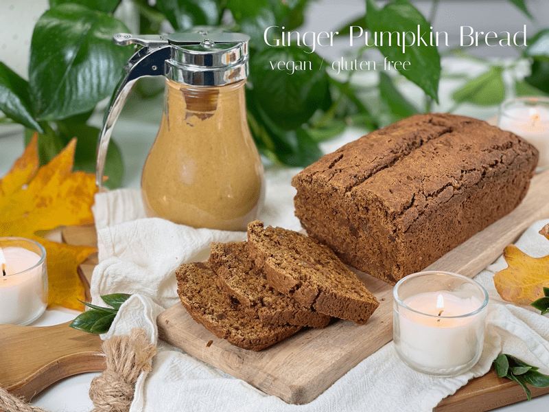
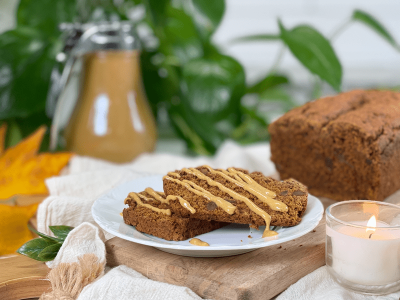
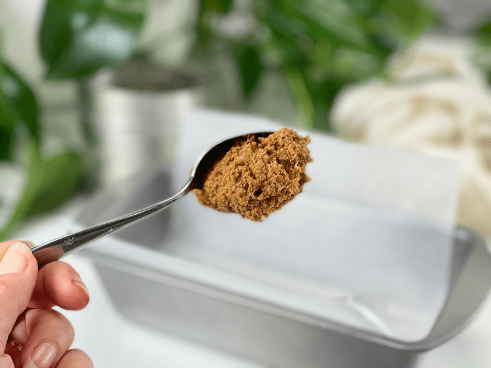
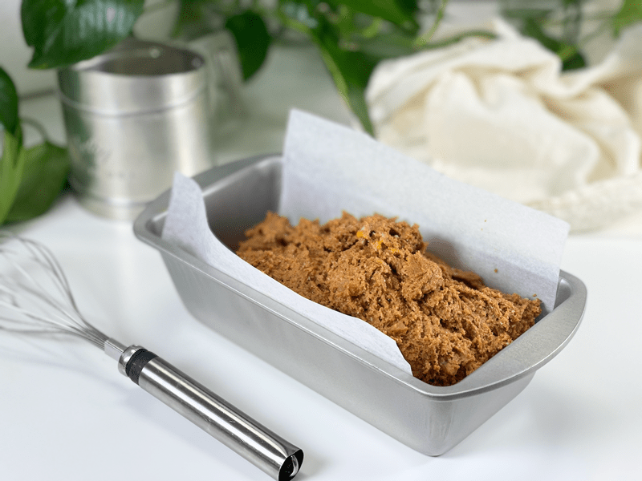
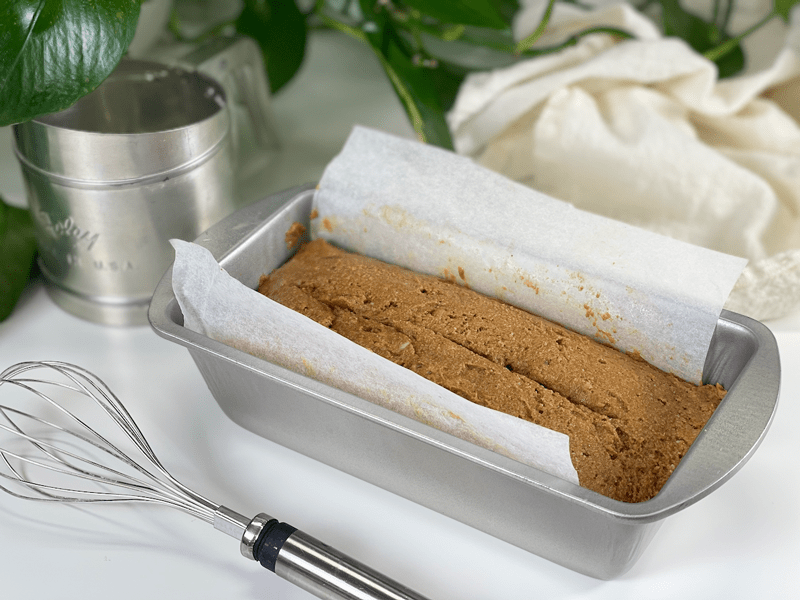
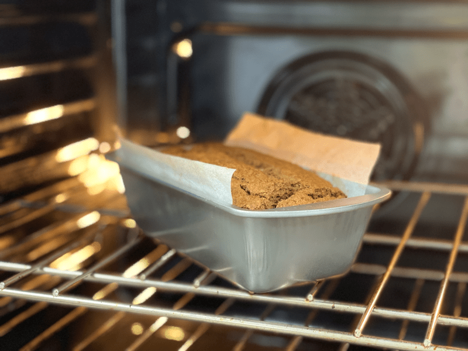
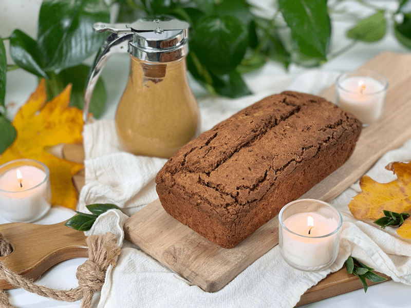

Ginger Pumpkin Quick Bread | Vegan, Gluten-Free, Nut-Free
If you wish for autumn to come faster and stay longer, this quick bread recipe is going to help you achieve just that. Moist and tender, delicately flavored with pumpkin, spices, and dried chewy ginger bits, this humble loaf needs no bells and whistles. But if I need to tie bells to my toes and whistle from the rooftops to bring more attention to this recipe, then I will do so. I left out the gluten, dairy products, and nuts, making it perfect for those with allergens. But what I didn’t leave out was taste!

Quick breads are known for being quick and easy to make. There is truth in that, BUT there are a few tips and tricks that will lead to full success. When recipes are designed, there is a little (sometimes a LOT) of science behind them: the correct ratio of dry and wet ingredients, using enough but not too much fat, balancing the sweetness for flavor but also for proper crust formation… and so on. If you’re feeling adventurous and want to swap out ingredients, be sure to let me know how it goes (it will be a completely different adventure from mine). We can all learn from one another.
I highly suggest reading through these tips and tricks before tackling this recipe. Before I let you go, some of you might be wondering what’s in the mug (if not, that’s just my wishful thinking shining through!). I blended together until warm 1 cup oat milk, 1/4 cup cold-pressed coffee, and 1/4 cup of my Pumpkin Spice Caramel Sauce. Delish!
Quick Tips for Quick Breads
Flour Options
- Oat flour is the main flour in this recipe. Please use store-bought or finely ground homemade (I stress FINELY).
- Tiger nut flour is the supporting flour that I used. I chose it because it is nut-free. It does lead to a tad crumblier slice of bread, but the flavor is spot on and again… it’s nut-free! If you don’t have or wish to use tiger nut flour, you can replace it with almond flour or more oat flour.
- Do NOT use coconut flour. It is far too drying, as it loves to suck the moisture out of baked goods.
Measuring Flour
- Do not scoop the floor out of the bag or container with the measuring cup. It is easy to overmeasure flour for any recipe by as much as 30% or more by doing so.
- The best way to measure the dry ingredients is to spoon them into the measuring cup and level with the back of a knife.
- Make sure to use the CORRECT measuring vessel. Clear glass or plastic measuring cups with pouring lips and handles are used to measure liquids. For dry ingredients, always use a measuring cup that comes as a “nested” set (i.e. separate cups to measure 1/4, 1/3, 1/2 and 1 cup).
Mixing Tips
- Quick bread batters are made up of dry ingredients and wet ingredients.
- For best results, mix the dry ingredients together in a large bowl and mix the wet ingredients in a separate bowl. Combine the two just until the dry ingredients are moistened; avoid overmixing the batter.

Add-In Tips
- If using “add-ins” such as raisins, chocolate chips, etc. coat them with flour before adding so they don’t all sink to the bottom of the pan while baking.
- If you’re adding dried fruit, soak first to moisten the fruit, making it tender and juicy, as well as preserving the bread’s moisture.
- Don’t sprinkle dried fruit on top of quick bread before baking, as it will burn before the loaf is done.
- If you’re using frozen berries, don’t thaw them before using them, otherwise the colors from the fruit will bleed into the batter. Don’t forget to toss them in flour as well.
Baking Vessels
- Metal pans are their excellent in terms of their conduction capabilities and heat retention. These pans will require a greasing or lining of parchment paper to prevent sticking.
- Silicone loaf pans don’t require any greasing or lining, and in my experience, baked goods pop right out of them.
- Glass loaf pans don’t have the conduction abilities of metal pans, meaning you may need to adjust the baking time. Baked goods also have a tendency to stick to glass a little more if not properly greased. If you select a glass bakeware dish, reduce the oven temperature by 25°F.
- Size matters. For this recipe I used an 8″ loaf pan. If you use a pan with less depth, reduce the cooking time by 10 to 15 minutes. If the depth is thicker, increase the cooking time by 10 to 15 minutes. Be sure to use visual indicators and a toothpick to test for the proper doneness.
Slicing Tips
- As tempting as it is, resist the urge to cut into a loaf of quick bread right from the oven. Slicing warm quick bread will cause it to crumble, and you won’t get clean slices. Letting the bread sit overnight will give you even better slicing results, but if you can’t wait… I get it! The rich aroma of the bread baking is enough to make you want to face-plant it as soon as it’s ready!
- Once cooled, slice with a sawing motion using a serrated knife.
Okay, so I have made my loaf, eaten most of it, and dishes are done… it’s now YOUR turn. I will relax and patiently wait for you to make yours, so you can report back and let me know how it went. blessings, amie sue
 Ingredients
Ingredients
Yields 8″ loaf pan
Wet Ingredients
- 1 cup pumpkin puree
- 1/4 cup melted coconut oil
- 1/4 cup maple syrup
- 1 Tbsp blackstrap molasses
- 1 flax egg
- 1 tsp pure vanilla extract
Dry Ingredients
- 2 cups gluten-free oat flour
- 1/2 cup tiger nut flour
- 6 Tbsp coconut sugar
- 1 Tbsp pumpkin pie spice
- 1 1/2 tsp baking powder
- 1 tsp baking soda
- 1/2 tsp salt
- 1/2 cup diced crystallized ginger
Preparation
- Preheat the oven to 350 degrees (F).
- Line an 8-inch loaf pan with parchment paper and set it aside.
- Wet ingredients: Whisk together the pumpkin puree, coconut oil, maple syrup, sugar, flax egg, and vanilla.
- To make a flax egg, combine 1 tablespoon ground flaxseed with 3 tablespoons water–whisk together, set for 15 mins.
- Make sure all ingredients are at room temperature to prevent the melted coconut oil from clumping if it comes in contact with a cold ingredient.
- Be sure to use pure pumpkin puree. Don’t use the pumpkin pie puree, which has added sugar and spices.
- In a separate bowl, whisk together the oat flour, tiger nut flour, baking soda, baking powder, pumpkin spice, and salt.
- When each bowl of ingredients is mixed thoroughly, that’s when you can combine them.
- The secret to moist, tender quick bread is in the mixing. Use a gentle touch. Pour the bowl of wet ingredients into the bowl of dry ingredients and fold them together gently. Do this part by hand rather than with a mixer.
- Scoop the batter into the prepared loaf pan and shape the top of the batter into a dome down the center to resemble a loaf of bread. With the tip of a knife, cut a slit down the center of the loaf.
- The batter will be very thick. See photo down below.
- Side onto the middle rack in the oven and bake for 55-65 minutes.
- Test for doneness at the 55-minute mark by sticking a toothpick into the center of the loaf. If done, it will come out clean.
- Once done baking, lift the bread out of the pan by the parchment paper and slide the bread onto a cooling rack. Allow it to cool COMPLETELY before slicing.
- If your bread looks cracked on top… don’t consider this a failure! This is a common characteristic of quick bread, as it sets in the oven but continues to rise through the baking time.
Storage (fridge & freezer)
- Store any leftovers in an airtight container on the counter for 3 days, in the fridge for up to one week, or the freezer for 1 month.
- If you choose to freeze the bread, wrap it in parchment paper, place it in an airtight container, and freeze for up to 1 month.
-

-
Just showing you how thick the batter is so you know what to expect.
-

-
Plop the batter into the baking pan.
-

-
Don’t pack the batter in, but smooth, dome the top, and score it with a knife.
-

-
Freshly baked.
-

-
Remember–allow it to FULLY cool before slicing.
© AmieSue.com